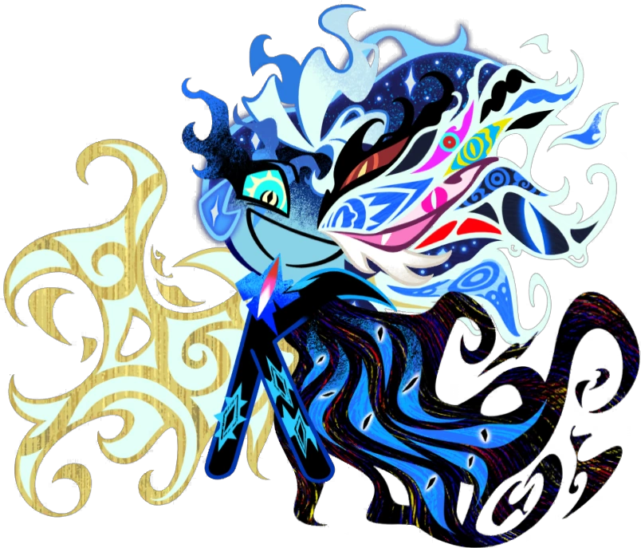
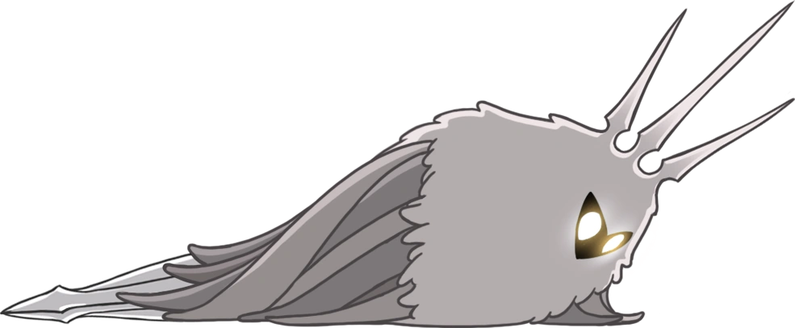

- Первая заповедь: «Всегда побеждай в своих битвах». Проигрыш в битве ничего не даст и ничему не научит. Выигрывайте битвы или не участвуйте в них вообще!
- Вторая заповедь: «Пусть над тобой никогда не смеются». Глупцы смеются над всем, даже над начальством. Но будьте осторожны, смех не безобиден! Смех распространяется как болезнь, и вскоре все будут смеяться над вами. Вам нужно быстро нанести удар по источнику этого извращенного веселья, чтобы остановить его распространение.
- Третая заповедь: «Всегда будьте отдохнувшими». Сражения и приключения сильно сказываются на вашем организме. Когда вы отдыхаете, ваше тело укрепляется и восстанавливается. Чем дольше вы отдыхаете, тем сильнее становитесь.
- Четвертая заповедь: «Забудьте свое прошлое». Прошлое причиняет боль, и мысли о прошлом могут только причинять страдания. Подумайте о чем-нибудь другом, например, о будущем или о еде.
- Пятая заповедь: «Сила побеждает силу». Ваш противник силен? Неважно! Просто превзойдите его силу еще большей силой, и он скоро будет побежден.
- Шестая заповедь: «Выбери свою судьбу». Наши старейшины учат, что наша судьба предопределена еще до нашего рождения. Я с этим не согласен.
- Седьмая заповедь: «Не скорбите по умершим». Когда мы умираем, становится ли нам лучше или хуже? Это невозможно предсказать, поэтому не стоит ни скорбеть, ни праздновать.
- Восьмая заповедь: «Путешествуй в одиночку». На кого нельзя полагаться, и никто не будет всегда верен. Поэтому никто не должен быть вашим постоянным спутником.
- Девятая заповедь: «Поддерживайте порядок в доме». В вашем доме хранится самое ценное, что у вас есть — вы сами. Поэтому следует стараться содержать его в чистоте и порядке.
- Десятая заповедь: «Держи оружие острым». Я слежу за тем, чтобы мое оружие, «Убийца жизни», всегда было хорошо заточено. Это значительно облегчает резку предметов.
- Одиннадцатая заповедь: «Матери всегда будут тебя предавать». Этот заповедь говорит сам за себя.
- Двенадцатая заповедь: «Держи свою одежду сухой». Если ваш плащ намок, высушите его как можно скорее. Носить мокрый плащ неприятно и может привести к болезням.
- Тринадцатая заповедь: «Никогда не бойся». Страх может только сдерживать вас. Преодоление страхов может потребовать огромных усилий. Поэтому вам просто не следует бояться.
- Четырнадцатая заповедь: «Уважайте своих начальников». Если кто-то превосходит вас силой, интеллектом или и тем, и другим, вы должны проявить к нему уважение. Не игнорируйте его и не смейтесь над ним.
- Пятнадцатая заповедь: «Один враг — один удар». Для победы над врагом следует использовать только один удар. Больше — пустая трата. Кроме того, считая удары во время боя, вы будете знать, сколько врагов вы победили.
- Шестнадцатая заповедь: «Не колеблйтесь». Приняв решение, воплотите его в жизнь и не оглядывайтесь назад. Так вы добьетесь гораздо большего.
- Заповедь семнадцать: «Верь в свои силы». Другие могут сомневаться в вас, но есть тот, кому вы всегда можете доверять. Вы сами. Верьте в свои силы, и вы никогда не дрогнете.
- Восемнадцатая заповедь: «Ищите истину во тьме». Этот заповедь также объясняет сам себя.
- Девятнадцатая заповедь: «Если постараешься, добьешься успеха». Если вы собираетесь что-то предпринять, убедитесь, что добьетесь успеха. Если у вас ничего не получится, значит, вы потерпели неудачу! Избегайте этого любой ценой.
- Двадцатая заповедь: «Говорите только правду». В разговоре с кем-либо вежливо и эффективно говорить правду. Однако помните, что правда может нажить вам врагов. С этим вам придётся смириться.
- Заповедь двадцать первая: «Остерегайтесь своего окружения». Не стоит просто идти, уставившись в землю! Нужно время от времени поднимать взгляд, чтобы ничто не застало вас врасплох.
- Заповедь двадцать вторая: «Покинь гнездо». Как только появилась возможность, я покинул место своего рождения и отправился в мир. Не задерживайся в гнезде. Там тебе нечего делать.
- Заповедь двадцать третья: «Определите слабое место противника». У каждого врага, с которым вы столкнетесь, есть слабое место, например, трещина в панцире или состояние сна. Вы должны постоянно быть начеку и внимательно изучать противника, чтобы обнаружить его уязвимые места!
- Заповедь двадцать четвертая: «Наносите удар по слабому месту врага». Как только вы, согласно предыдущему заповедьу, определите слабое место противника, нанесите по нему удар. Это мгновенно его уничтожит.
- Заповедь двадцать пятая: «Защищайте свои слабые места». Помните, что ваш противник попытается выявить ваше слабое место, поэтому вы должны его защищать. Лучшая защита? Отсутствие слабых мест вообще.
- Заповедь двадцать шестая: «Не доверяйте своему отражению». Вглядываясь в некоторые блестящие поверхности, вы можете увидеть копию собственного лица. Лицо будет имитировать ваши движения и казаться похожим на ваше, но я не думаю, что ему можно доверять.
- Заповедь двадцать седьмая: «Ешьте как можно больше». Во время еды ешьте как можно больше. Это даст вам дополнительную энергию и позволит есть реже.
- Заповедь двадцать восьмая: «Не заглядывай во тьму». Если долго всматриваться в темноту и ничего не видеть, разум начнет зацикливаться на старых воспоминаниях. Воспоминаний следует избегать, согласно Четвертому заповедьу.
- Заповедь двадцать девятая: «Развивайте чувство направления». Путешествуя по извилистым пещерам, легко заблудиться. Хорошее чувство направления подобно волшебной карте в голове. Очень полезно.
- Тридцатая заповедь: «Никогда не принимайте обещаний». Отвергайте обещания других, ибо они всегда нарушаются. Особенно следует избегать обещаний любви или помолвки.
- Заповедь тридцать первая: «Болезнь живет внутри грязи». Вы заболеете, если будете слишком долго находиться в грязных местах. Если вы останавливаетесь в чужом доме, требуйте от хозяина высочайшего уровня чистоты.
- Заповедь тридцать вторая: «Имена обладают силой». Имена обладают силой, поэтому дать чему-либо имя — значит наделить это силой. Я сам назвал свой ноготь «Жизнь уносящий». Не воруйте мое имя! Придумайте свое собственное!
- Тридцать третья заповедь: «Не проявляйте неуважения к врагу». Проявлять галантность по отношению к врагам – это не добродетель! Если кто-то вам противостоит, он не заслуживает уважения, доброты или милосердия.
- Тридцать четвёртая заповедь: «Не ешьте непосредственно перед сном». Это может вызвать беспокойство и расстройство желудка. Это просто здравый смысл.
- Заповедь тридцать пятая: «Вверх — это вверх, вниз — это вниз». Если вы упадете в темноте, легко потерять ориентацию и забыть, где верх, а где низ. Помните об этом правиле!
- Заповедь тридцать шестая: «Яичная скорлупа хрупкая». И снова этот заповедь говорит сам за себя.
- Заповедь тридцать седьмая: «Заимствуйте, но не давайте взаймы». Если вы даёте взаймы и получаете обратно деньги, вы ничего не выигрываете. Если вы берёте взаймы, но не возвращаете деньги, вы выигрываете всё.
- Тридцать восьмая заповедь: «Остерегайтесь таинственной силы». Таинственная сила обрушивается на нас сверху, толкая вниз. Если вы слишком долго пробудете в воздухе, эта сила раздавит вас о землю и уничтожит. Остерегайтесь!
- Тридцать девятая заповедь: «Ешьте быстро и пейте медленно». Ваш организм — очень хрупкий, и вы должны питать его с большой осторожностью. Пища должна усваиваться как можно быстрее, а жидкость — медленнее.
- Сороковая заповедь: «Не подчиняйтесь никакому закону, кроме своего собственного». Законы, написанные другими, могут доставлять вам неудобства или быть бременем. Пусть единственным законом будут ваши собственные желания.
- Сорок первая заповедь: «Научитесь распознавать ложь». Когда другие говорят, они обычно лгут. Тщательно изучайте и допрашивайте их, пока они не раскроют свой обман.
- заповедь сорок вторая: «Тратьте гео, когда у вас есть средства». Некоторые будут цепляться за свои деньги, даже забрав их с собой в могилу после смерти. Лучше потратить их, когда есть возможность, чтобы наслаждаться различными радостями жизни.
- Сорок третяя заповедь: «Никогда не прощайте». Если кто-то просит у вас прощения, например, ваш брат, всегда отказывайте. Этот брат, или кто бы это ни был, не заслуживает прощения.
- Заповедь сорок четвёртая: «В воде нельзя дышать». Вода освежает, но если попытаться ею дышать, вас ждет неприятный сюрприз.
- Заповедь сорок пятая: «Одно не есть другое». Это должно быть очевидно, но другие пытались доказать, что нечто, что явно является именно этим, а не чем-то другим, на самом деле представляет собой нечто иное, чем оно не является. Будьте начеку!
- Заповедь сорок шестая: «Мир меньше, чем вы думаете». В юности кажется, что мир огромен, гигантский, просто гигантский. Это вполне естественно. К сожалению, на самом деле он гораздо меньше. Могу сказать это, побывав во всех уголках страны.
- Заповедь сорок седьмая: «Создай своё собственное оружие». Только вы точно знаете, что нужно вашему оружию. Я сам в юном возрасте смастерил «Жизнь уносящий» из ракушечника. Оно меня ни разу не подвело. И я его тоже.
- Заповедь сорок восьмая: «Остерегайтесь огня». Огонь — это разновидность горячего духа, который неистово танцует. Он может согреть вас и дать свет, но он также опалит вашу оболочку, если подойдет слишком близко.
- Заповедь сорок девятая: «Статуты бессмысленны». Не стоит им оказывать почести! Никто никогда не ставил памятники ни вам, ни мне, так почему же мы должны обращать на них внимание?
- Пятидесятая заповедь: «Не зацикливайтесь на тайнах». Некоторые вещи в этом мире кажутся нам загадками или головоломками. Но если смысл чего-либо не очевиден сразу, не стоит тратить время на размышления. Просто идите дальше.
- Пятьдесят первыйая заповедь: «Ничто не безобидно». Если представится возможность, всё в этом мире причинит тебе боль. Друзья, враги, чудовища, тернистые пути. Относись ко всему с подозрением.
- Заповедь пятьдесят вторая: «Остерегайтесь ревности отцов». Отцы верят, что, поскольку они нас создали, мы должны служить им и никогда не превосходить их возможностей. Если вы хотите проложить свой собственный путь, вы должны победить своего отца. Или просто бросить его.
- Пятьдесят третья заповедь: «Не кради чужих желаний». Каждое существо хранит свои желания в себе. Если вы заметите проблеск чужих желаний, сопротивляйтесь желанию присвоить их себе. Это не приведет вас к счастью.
- Пятьдесят четвёртая заповедь: «Если ты что-то запер, храни ключ». Ничто не должно быть заперто навсегда, поэтому берегите свои ключи. В конце концов, вы вернетесь и откроете все, что спрятали.
- Пятьдесят пятая заповедь: «Никому не кланяйся». В этом мире есть люди, которые навязывают свою волю другим. Они заявляют о своем праве собственности на вашу еду, вашу землю, ваше тело и даже ваши мысли! Они ничего не сделали, чтобы заслужить это. Никогда не склоняйтесь перед ними и обязательно ослушивайтесь их приказов.
- Заповедь пятьдесят шесть: «Не мечтай». Сны — опасная вещь. Странные, не ваши собственные мысли могут проникнуть в ваш разум. Но если вы будете сопротивляться этим мыслям, вас постигнет болезнь! Лучше вообще не видеть снов, как это делал я.
- Пятьдесят седьмая заповедь: «Соблюдайте все заповеди». Самое главное, вы должны запомнить все эти заповеди и неукоснительно им подчиняться. Включая эту! Хм. Вы действительно всё слушали? Давайте начнём сначала и повторим «Пятьдесят семь заповедей Зота».
Я - Могучий Зот, пленён силами лжи, что шил сам. Дабы стать хоть сколько-то похожим на меня, следуй моим 57 заповедям:

Ты чё устроил #&*@. Что за незаконная коллаба? Мне сейчас хватает коллабы с Kpop demon hunters, а тут ты ещё.
"Я соткал ложь и я щас в ней", "Двадцатая заповедь: «Говорите только правду». В разговоре с кем-либо вежливо и эффективно говорить правду. Однако помните, что правда может нажить вам врагов. С этим вам придётся смириться.", ты в курсе, что ты протеворечишь сам себе?
Что у вас тут происходит?
